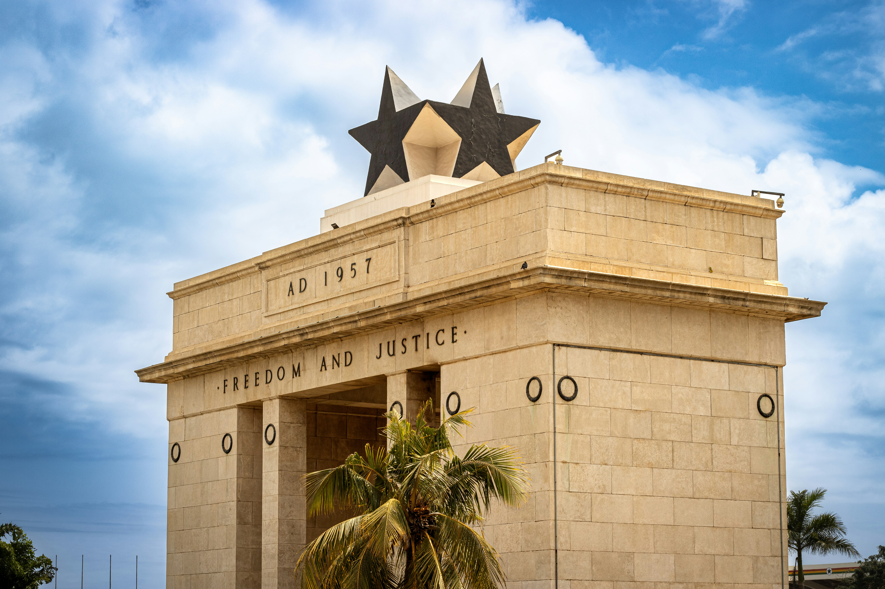
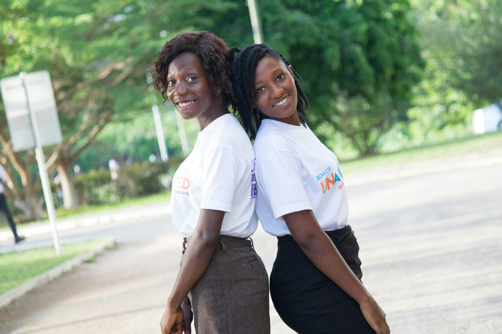
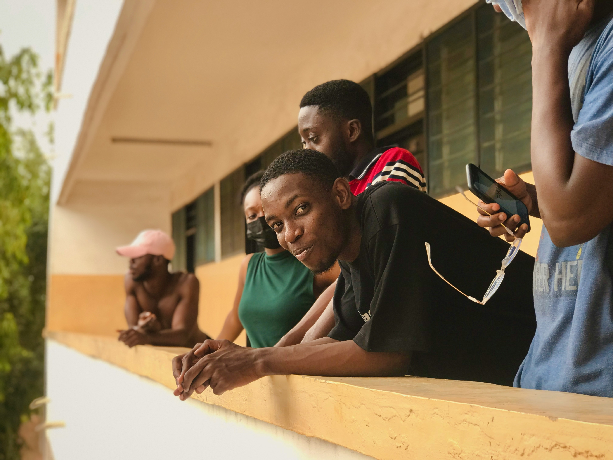
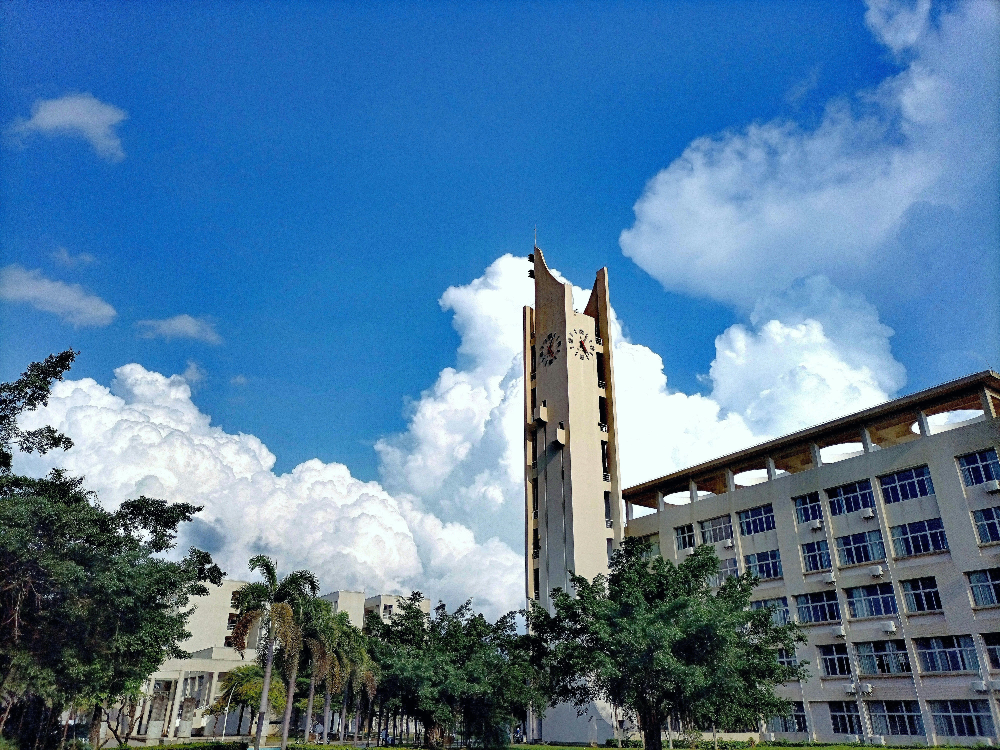
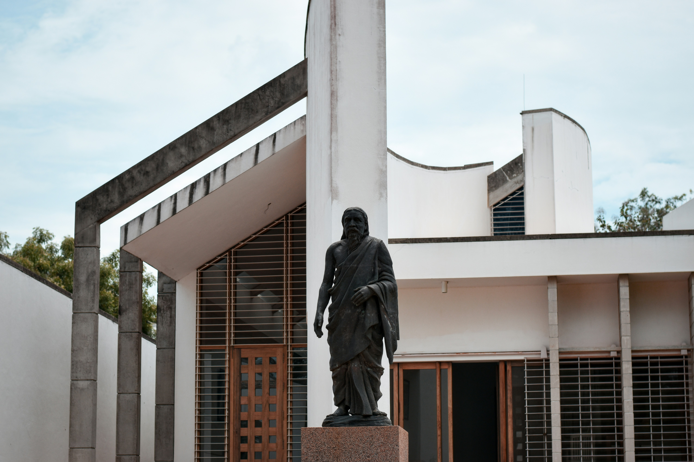

筑波大学の学群生が、ガーナ3大学の学生とともに学び・議論し・現地フィールドを訪れる 短期集中型の国際共修プログラムです。
あらゆる専門分野の学生が参加可能。アフリカ・ガーナでの実地フィールドワークを通じて、 グローバル社会の課題とその解決策を「自分ごと」として考えます。
本プログラムは、文部科学省「大学の世界展開力強化事業～グローバル・サウスの国々との大学間交流形成支援～タイプII：アフリカ諸国」において採択された 「地球社会共生の未来を共創する学際フィールド共修」を中核とする交流プログラムです。
対象国はガーナで、ガーナ大学・ケープコースト大学・クワメ・エンクルマ科学技術大学の3大学と協働しながら、 日・ガーナ双方の学生が共に学ぶ機会を提供します。
日本は少子高齢化が進む一方、アフリカは今後も人口・経済ともに大きな成長が見込まれています。 「遠い地域」の出来事としてではなく、未来のパートナーとしてアフリカを理解し、 互いの立場を尊重しながら未来社会を共創できる人材の育成を目指します。
地球社会共生の未来を共創する学際フィールド共修



アフリカでは、紛争や異常気象などの課題が依然として存在する一方で、 モバイルマネーの普及や宇宙開発など、未来志向の取り組みが急速に進んでいます。 例えば、モバイル決済額の多くがアフリカで行われていることや、 アフリカ宇宙庁（AfSA）の発足などは、その象徴的な例です。
本プログラムでは、こうした「課題」と「可能性」が共存するフィールドを実際に訪れ、 日本とガーナの学生がともに現場を見て考え、学際的な視点から 未来の共生社会のデザインに挑戦します。
本プログラムは、事前学習・オンライン共修・現地フィールドワーク・フォローアップからなる 全6コンポーネントで構成されています。単位化された科目も含まれます。
| 地球社会共創概論（オンデマンド講義） ［1単位］ |
日本（アジア）とガーナ（アフリカ）の地理・歴史・社会・文化・開発史を多角的に学び、 異文化理解・多文化共生の基礎を身につけます。 |
|---|---|
| 地球社会共創演習（オンライン問題解決型学習） ［1単位］ |
日・ガーナ混成チームでグローバルな環境問題をテーマに、各自の専門を生かしながら オンラインで議論・協働し、解決策を検討します。 |
| アフリカ・オンラインフィールドスタディ ［1単位・既存科目］ |
現地の社会・文化・環境課題について、オンラインを通じて学ぶフィールドスタディです。地球社会共創演習の学修効果を増強するために履修することを推奨します。 |
| 地球社会共創実習A（ガーナでのフィールド共修） ［1単位・約2週間集中］ |
日本とガーナの学生が共にガーナのフィールドを訪れ、「豊かになった社会の負の側面」が 表出した現場を視察し、多層的に問題を分析します。 |
| 地球社会共創実習B（日本でのフィールド共修） ［1単位・約1週間集中］ |
ガーナの学生を日本に迎え、日本における環境・社会課題の現場を訪問し、 双方の文脈を踏まえた課題比較・アクションプラン検討を行います。 |
| フォローアップ（事後学習・キャリア支援） | プログラムで得た経験を振り返り、今後の学修計画やキャリア形成にどのように活かすかを考えます。 |
※ガーナでのフィールド共修（地球社会共創実習A）への参加を希望する学生は、
地球社会共創概論および地球社会共創演習を履修し、その成果に基づいて選抜されます。
※実習Aに参加した学生は、原則として実習B（日本でのフィールド共修）にも参加していただきます。
地球社会共創概論・演習・実習を通じて、グローバル社会が直面する多様な問題を理解し、 解決策を模索するプロセスの中で、多様な価値観と「未知」に出会うことを重視しています。
将来的には、未来の共生社会を自らデザインし、その知を社会の安定・発展へとつなげていく 実践的なグローバル人材の育成を目標としています。
1948年にロンドン大学のカレッジとして設立された、ガーナで最も歴史ある総合大学です。 基礎・応用科学、教育、保健、人文社会科学の4つのカレッジと、複数の研究センターを有し、 アフリカのみならず欧米の大学とも幅広い交流ネットワークを持っています。
タイムズ・ハイヤー・エデュケーション世界大学ランキングで、ガーナおよび西アフリカのトップ大学として評価されている大学です。 大西洋を望むキャンパス環境と、社会科学・自然科学・教育など多様な学位プログラム、世界的な研究影響力を強みとしています。

工学・科学技術分野を中心とした国立大学で、農学・建築・人文社会・工学・保健・理学の6カレッジから構成されています。 科学技術を通じたガーナの経済・社会発展を牽引する人材育成・研究に力を入れています。

ガーナでのフィールド共修（地球社会共創実習A）に参加する学生は、以下のような準備が必要になります。 詳細な手順やスケジュールは、採択後に教員から案内します。
※詳細な「渡航ガイド（最新版）」は、採用者向けのオリエンテーション資料として別途配布します。
本プログラムでは、2025年度は以下の行程でガーナ現地でのプレフィールド共修を実施します。
募集人数：２名（予定）
※上記行程は現地状況により変更となる可能性があります。
下記のフォームから必要事項を入力の上、ご応募ください。
日・ガーナ双方の学生が英語を共通言語としてコミュニケーションを行いますが、 完全な英語運用能力ではなく、「伝えようとする姿勢」と継続的な学習意欲を重視します。
採択された予算枠の中で、渡航費・滞在費の一部または全部を大学側が支援する予定です。 詳細は年度ごとの募集要項で案内します。
実習A・Bは集中形式で行うため、実施期間中は原則としてプログラムに専念していただきます。 事前にスケジュールを確認し、時間的な余裕を確保した上で応募してください。
安全な宿や交通手段の手配など、大学と現地の協力機関が連携し、安全な滞在環境を確保します。また、渡航経験豊富な本学教員が渡航期間中フルアテンドし、参加者を常にサポートします。
本プログラムは筑波大学の開設科目と紐づく形で構成されています。プログラム参加者は最大4単位分の単位取得が可能です。また、プログラムの進捗に応じて国際通用性のあるデジタル証明書である、デジタルバッジを発行します。